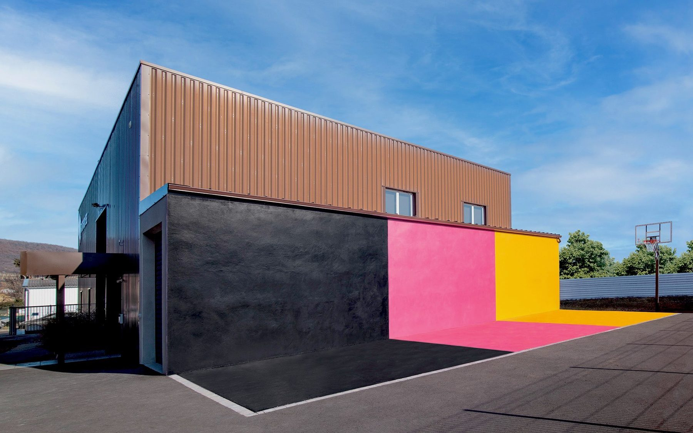
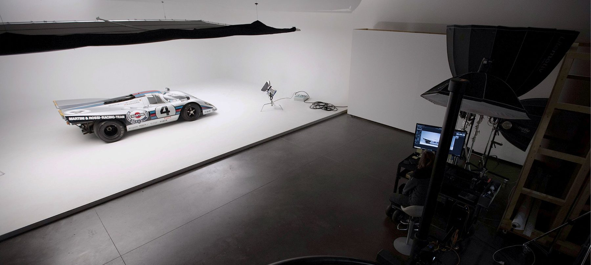
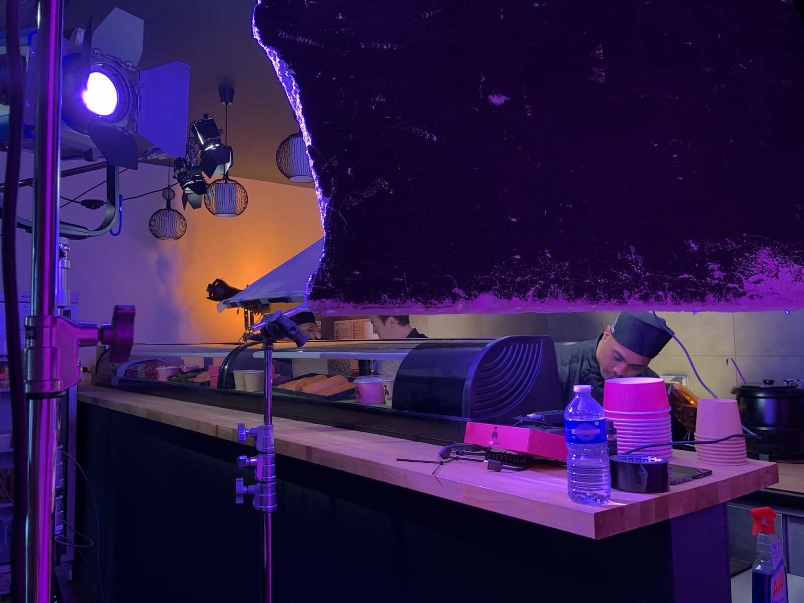
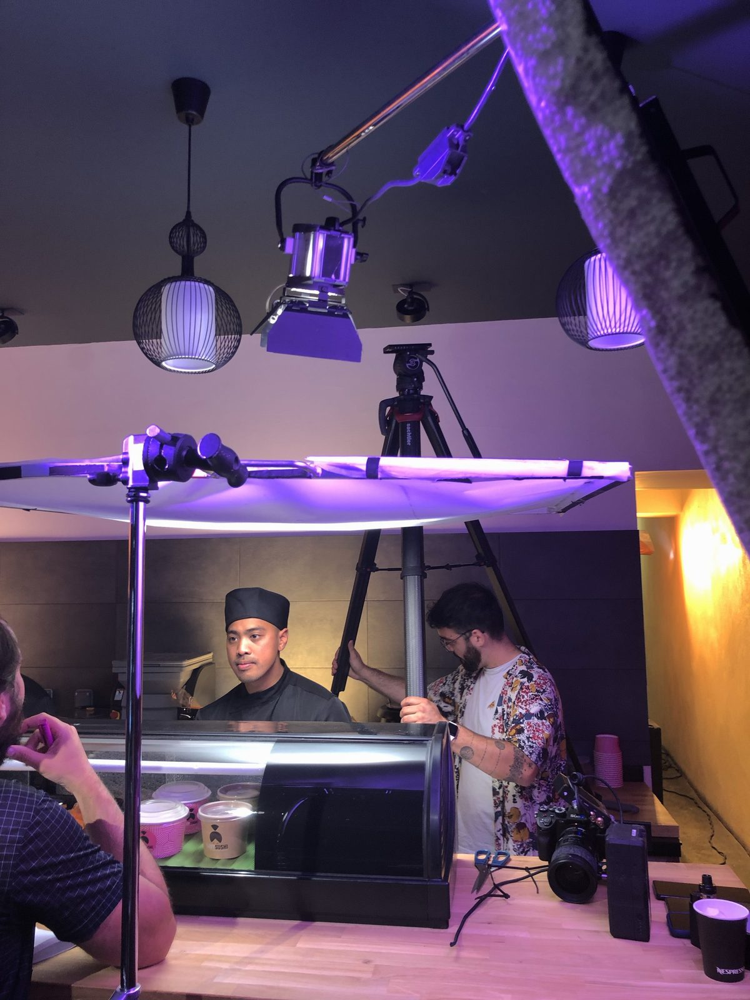
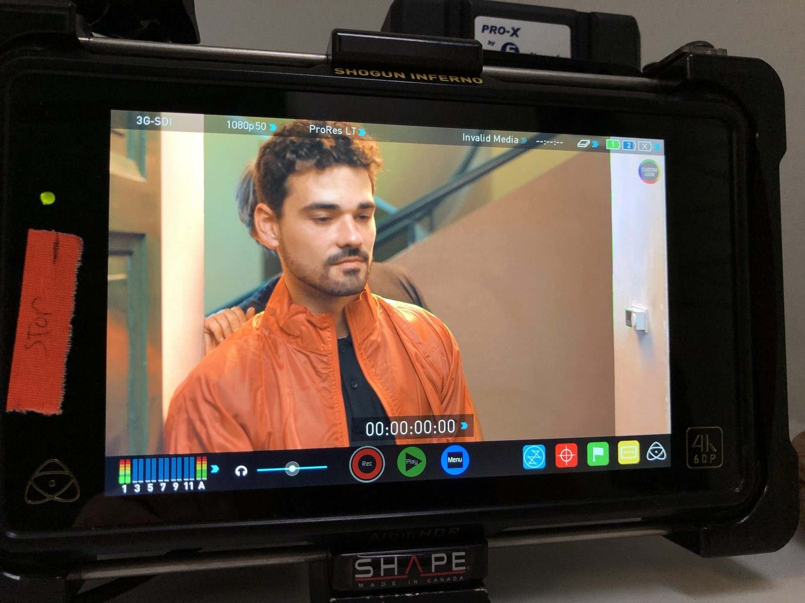
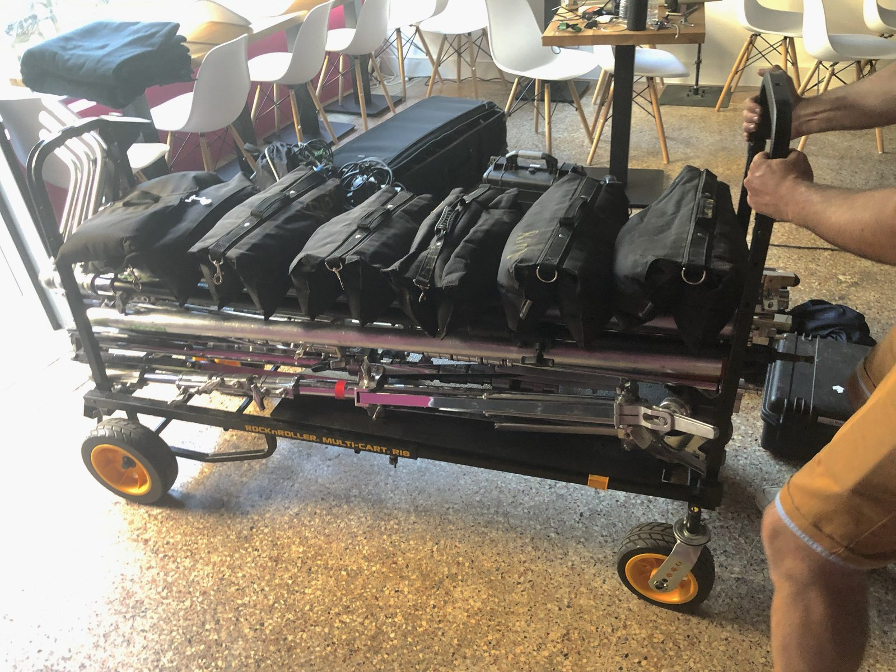
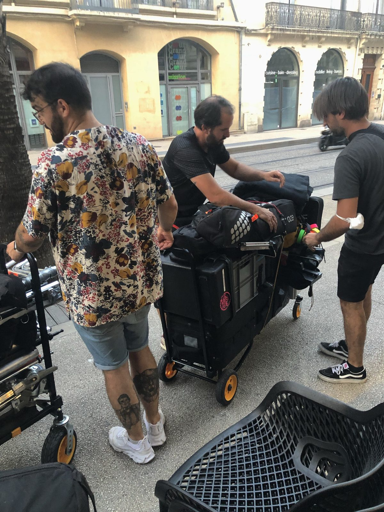
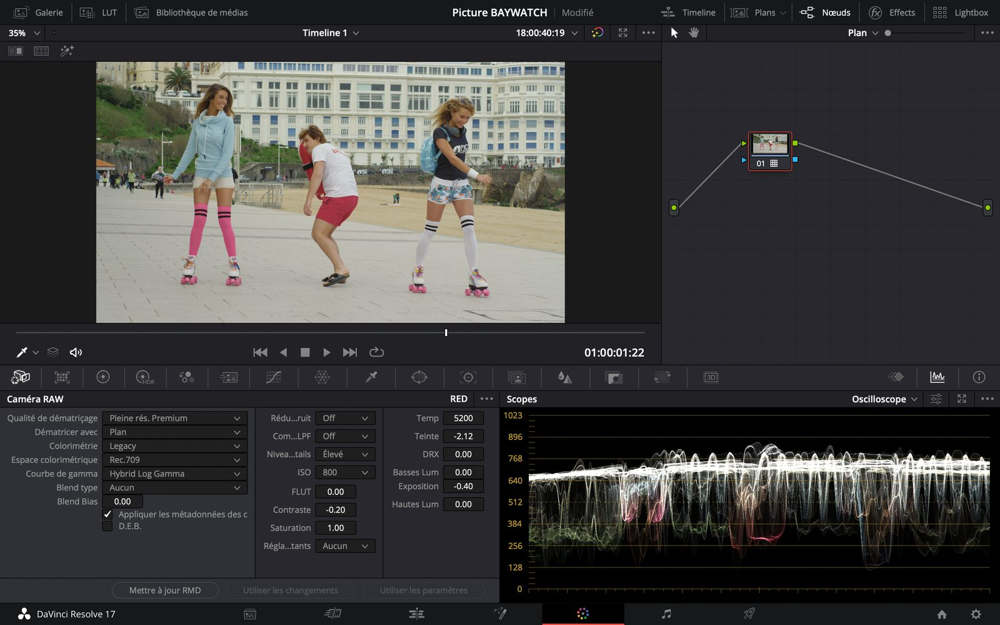

Stage / production audiovisuelle
RiotHouse Production
Stage BTS Audiovisuel option Image au sein d'une société de production complète : tournage, montage, organisation des rushs, postproduction et découverte concrète d'un workflow publicitaire professionnel.

Intention
Entrer dans une vraie chaîne de production.
RiotHouse Production m'a permis d'observer une structure capable de réunir réalisation vidéo, photographie, montage, son, graphisme, motion design et VFX 3D dans un même lieu de travail. L'intérêt du stage était de comprendre comment une idée devient un projet organisé, tourné, monté puis livré.
Le contexte était celui d'une production publicitaire et institutionnelle, avec des contraintes de client, de timing, de matériel et de validation. C'est cette rigueur de fabrication qui m'a marqué : chaque image dépend autant du plateau que du classement, du dérush et de la postproduction.

Apprentissages
Un stage pensé comme une traversée complète du métier.
Plateau
Préparer, installer, tourner, ranger.
Observation et assistance sur différents tournages : fonderie dans le Puy-de-Dôme, publicité Lady Sushi à Montpellier et tournage Cébé au Mont-Dore. J'y ai découvert la rigueur d'un plateau, du rig caméra au placement lumière.
Montage
Construire une vidéo avec méthode.
Travail sur Premiere Pro autour d'un making-of pour Picture Organic Clothing et d'une série de vidéos courtes pour OSV. L'enjeu : dérusher vite, garder une structure propre et respecter une durée efficace pour la diffusion.
Workflow image
Comprendre une chaîne plus professionnelle.
Découverte du travail sur rushs RED Helium 8K, du passage dans DaVinci Resolve et d'une logique d'étalonnage. Le stage m'a donné une lecture plus concrète du lien entre caméra, lumière, fichiers et rendu final.






Référence vidéo
Lady Sushi, situer le niveau de production.
Le tournage Lady Sushi à Montpellier fait partie des situations observées pendant le stage. La vidéo finale permet de replacer l'expérience dans un environnement concret : publicité courte, équipe organisée, matériel professionnel et exigence de rendu immédiatement lisible.
Cette référence complète les images de plateau : elle montre le résultat final d'une chaîne où préparation, direction image, montage et validation client travaillent ensemble.
Studio, plateau, postproduction
Bilan
Du plateau
au workflow.
Ce stage a confirmé mon intérêt pour l'audiovisuel de production : le travail en équipe, la préparation, l'exigence d'un plateau et la précision nécessaire à la postproduction.
Il m'a aussi donné des repères concrets sur l'organisation d'un projet : dossiers de rushs, médias, sons, exports, continuité entre disque dur et logiciel, et importance d'un workflow propre pour pouvoir revenir sur une vidéo sans la désorganiser.